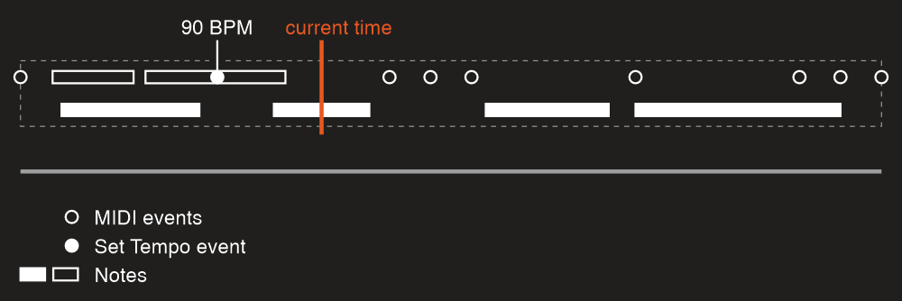
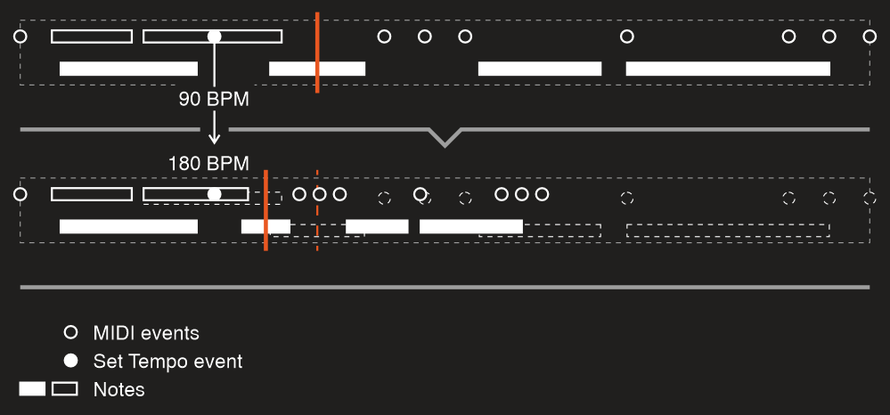

Dynamic changes
Playback API allows you to modify objects during playback. So you can, for example, add or remove a note or chord or any other MIDI event, or change tempo at some point in time. With this feature it’s possible to even build a MIDI sequencer or piano roll like in your favorite DAW.
Following code is a small demonstration of what you can do:
using Melanchall.DryWetMidi.Common;
using Melanchall.DryWetMidi.Core;
using Melanchall.DryWetMidi.Interaction;
using Melanchall.DryWetMidi.Multimedia;
using Melanchall.DryWetMidi.MusicTheory;
namespace DynamicPlayback
{
internal class Program
{
private static MusicalTimeSpan NoteLength = MusicalTimeSpan.Quarter;
private static MusicalTimeSpan GapStepLength = MusicalTimeSpan.ThirtySecond;
static void Main(string[] args)
{
var tempoMap = TempoMap.Default;
var observableCollection = new ObservableTimedObjectsCollection
{
new Scale(ScaleIntervals.Major, NoteName.C)
.GetAscendingNotes(Octave.Middle.C)
.Take(10)
.Select((n, i) => new Melanchall.DryWetMidi.Interaction.Note(n.NoteNumber)
.SetTime(NoteLength * i, tempoMap)
.SetLength(NoteLength, tempoMap))
};
var outputDevice = OutputDevice.GetByName("Microsoft GS Wavetable Synth");
var playback = new Playback(observableCollection, tempoMap, outputDevice);
playback.Loop = true;
Console.WriteLine("Press any key to start playback...");
Console.ReadKey();
playback.Start();
Console.WriteLine("Press ↑ or ↓ to change program number");
Console.WriteLine("Press ← or → to change gap between notes");
Console.WriteLine("Press any other key to exit...");
HandleChanges(observableCollection, tempoMap);
playback.Dispose();
outputDevice.Dispose();
}
private static void HandleChanges(
ObservableTimedObjectsCollection observableCollection,
TempoMap tempoMap)
{
TimedEvent programChangeTimedEvent = null;
var currentGapSteps = 0;
var currentProgram = SevenBitNumber.MinValue;
while (true)
{
var key = Console.ReadKey().Key;
switch (key)
{
case ConsoleKey.UpArrow:
case ConsoleKey.DownArrow:
HandleProgramChange(key, ref currentProgram, ref programChangeTimedEvent, observableCollection);
break;
case ConsoleKey.LeftArrow:
case ConsoleKey.RightArrow:
HandleGapChange(key, ref currentGapSteps, observableCollection, tempoMap);
break;
default:
return;
}
}
}
private static void HandleProgramChange(
ConsoleKey key,
ref SevenBitNumber program,
ref TimedEvent programChangeTimedEvent,
ObservableTimedObjectsCollection observableCollection)
{
program = key == ConsoleKey.UpArrow
? (SevenBitNumber)Math.Min(SevenBitNumber.MaxValue, program + 1)
: (SevenBitNumber)Math.Max(SevenBitNumber.MinValue, program - 1);
Console.WriteLine($"New program number: {program}");
if (programChangeTimedEvent == null)
{
programChangeTimedEvent = new TimedEvent(new ProgramChangeEvent(program), 0);
observableCollection.Add(programChangeTimedEvent);
}
else
{
var programNumber = program;
observableCollection.ChangeObject(
programChangeTimedEvent,
obj => ((ProgramChangeEvent)((TimedEvent)obj).Event).ProgramNumber = programNumber);
}
}
private static void HandleGapChange(
ConsoleKey key,
ref int gapSteps,
ObservableTimedObjectsCollection observableCollection,
TempoMap tempoMap)
{
gapSteps = key == ConsoleKey.LeftArrow
? Math.Max(0, gapSteps - 1)
: gapSteps + 1;
Console.WriteLine($"New gap between notes: {gapSteps}");
var gapStepsNumber = gapSteps;
var i = 0;
foreach (var note in observableCollection.OfType<Melanchall.DryWetMidi.Interaction.Note>())
{
observableCollection.ChangeObject(
note,
_ => note.SetTime((NoteLength + GapStepLength * gapStepsNumber) * i, tempoMap));
i++;
}
}
}
}
What does this console application do? Well, first of all it creates a set of notes (which is 10 steps of major scale starting from C) and then starts playing them in a loop. Interesting thing here is we use ObservableTimedObjectsCollection – a collection which allows us to modify those notes on the fly and even add new MIDI data to the current playback object:
- Press the up or down arrow key and the current program number will be incremented or decremented, so a new instrument will be used to make sound. To apply a program we need to add a Program Change event. If it already exists, we’ll just modify its ProgramNumber property.
- Press the right or left arrow and the gap between notes will be incremented or decremented. So we’re modifying notes times here.
IObservableTimedObjectsCollection
In fact, to enable tracking of data changes you need to create an instance of the Playback passing to its constructor an object which type implements two interfaces:
IEnumerable<ITimedObject>(just becausePlayback’s constructor accepts an argument of this type);- IObservableTimedObjectsCollection.
When you modify a collection, it will fire the CollectionChanged event holding information about what objects were added, removed and changed.
ObservableTimedObjectsCollection is a built-in type that meets two requirements above. It obviously has methods like Add or Remove, but also some special ones. First of all, in the example above we use the ChangeObject method. It allows you to modify an object and tell the collection that it has been changed in some way.
collection.ChangeObject(chord, obj =>
{
var c = (Chord)obj;
c.Notes.Remove(c.Notes.First());
});
collection.ChangeObject(chord, _ =>
{
chord.Channel = (FourBitNumber)5;
});
Sometimes your logic of collection modification can be complex and/or distributed between different parts of code. In this case it will be more efficient to fire CollectionChanged one time when you’re done with the data instead of triggering the event each time you make a change. There is a method for that – ChangeCollection:
var tempoMap = TempoMap.Create(Tempo.FromBeatsPerMinute(240));
var collection = new ObservableTimedObjectsCollection();
collection.ChangeCollection(() =>
{
AddInitialObjects(collection, tempoMap);
FilterObjects(collection);
FixObjects(collection, tempoMap);
});
private static void AddInitialObjects(
ObservableTimedObjectsCollection collection,
TempoMap tempoMap)
{
collection.Add(SevenBitNumber
.Values
.Select((noteNumber, i) => new Note(noteNumber) { Time = i * 100, Length = 200 }));
collection.Add(
new TimedEvent(new ProgramChangeEvent((SevenBitNumber)7) { Channel = (FourBitNumber)4 })
.SetTime(MusicalTimeSpan.Quarter, tempoMap),
new Chord(
new Note((SevenBitNumber)80),
new Note((SevenBitNumber)90))
{
Channel = (FourBitNumber)4
});
}
private static void FilterObjects(
ObservableTimedObjectsCollection collection)
{
var objectsToRemove = collection
.Where(obj => obj is Note note && note.NoteNumber % 2 == 0)
.ToList();
collection.Remove(objectsToRemove);
}
private static void FixObjects(
ObservableTimedObjectsCollection collection,
TempoMap tempoMap)
{
new Quantizer().Quantize(
collection,
new SteppedGrid(new MetricTimeSpan(0, 0, 1)),
tempoMap);
}
If you write just
AddInitialObjects(collection, tempoMap);
FilterObjects(collection);
FixObjects(collection, tempoMap);
it will trigger playback’s logic of data tracking multiple times which will degrade performance (you may notice lags in playback).
Of course you can create your own class implementing IObservableTimedObjectsCollection (and IEnumerable<ITimedObject>) and pass this collection to Playback. As the ObservableTimedObjectsCollection described above, your class should fire CollectionChanged event which arguments object (ObservableTimedObjectsCollectionChangedEventArgs) contains following data:
First and second properties provide a collection of ITimedObject objects which have been added and removed. Third property contains instances of the ChangedTimedObject holding an object along with its old time (time before changing).
Objects references
Note that you must use original objects references when you’re working with an observable collection. For example, with this code
var collection = new ObservableTimedObjectsCollection
{
new TimedEvent(new TextEvent("A"), 100)
};
var removed = collection.Remove(new TimedEvent(new TextEvent("A"), 100));
removed variable will have false value since we’re passing a new reference to the Remove method. Proper way is
var timedEvent = new TimedEvent(new TextEvent("A"), 100);
var collection = new ObservableTimedObjectsCollection
{
timedEvent
};
var removed = collection.Remove(timedEvent);
or
var collection = new ObservableTimedObjectsCollection
{
new TimedEvent(new TextEvent("A"), 100)
};
var removed = collection.Remove(collection.First());
The same situation with the ChangeObject method.
Orphaned Note On and Note Off events
Also we need to discuss a case when you add a Note On or Note Off event instead of a Note object. If you add a Note On event, no note will be built internally until you add corresponding (with the same note number and channel) Note Off event. The same is true if you add a Note Off event – you need to add corresponding Note On one to get the note and to have it played.
So with this code
collection.Add(new TimedEvent(
new NoteOnEvent((SevenBitNumber)70, SevenBitNumber.MaxValue),
100));
you won’t hear the note until
collection.Add(new TimedEvent(
new NoteOffEvent((SevenBitNumber)70, SevenBitNumber.MinValue),
200));
Tempo map
Obviously you can add a new Set Tempo event or modify an existing one. But what happens within playback when you do that?
First of all, the process of scaling events times begins. So it can take some time to process events after a tempo change. Of course, only data after a tempo change will be scaled.
For example, if we have this initial collection
var collection = new ObservableTimedObjectsCollection
{
new Note((SevenBitNumber)90) { Time = 300, Length = 500 },
};
and default tempo map (500000 microseconds per quarter note or 120 BPM), then playback events are:
- Note On at
300ticks; - Note Off at
800ticks.
Now we want to add a Set Tempo event:
collection.Add(new TimedEvent(new SetTempoEvent(250000), 100));
This change makes tempo 2x faster and playback events will be:
- Set Tempo at
100ticks; - Note On at
200ticks; - Note Off at
450ticks.
So time spans between the tempo change and events become 2x shorter (so they will be played earlier making playback faster).
It's important to note that when you change the tempo map, some time-based things other than MIDI events within the playback will be scaled too. To explain this better, let's take a look at the current time of the playback which can be accessed via GetCurrentTime methods. For example, we have such a playback state:

If we change the Set Tempo event so that the tempo will be 180 BPM (instead of current 90 BPM), the data will be shrinked by two times:

As you can see, the current time has been scaled too. Initially it was at the middle of the note. Scaling of the current time ensures it remains at the middle of that note so the playback will be smooth and without unexpected time jumps.
To preserve relative positions, following properties will be scaled too:
- PlaybackStart;
- PlaybackEnd;
- times of snap points.
When you use Playback created with an observable collection, you should use TempoMap property of the Playback instance when you work with its objects. When you edit a tempo map (via adding, removing or changing Set Tempo and Time Signature events), this property will reflect these changes. So the property holds the actual tempo map of the playback:
collection.Add(new TimedEvent(new TextEvent("A"))
.SetTime(new MetricTimeSpan(0, 0, 1), playback.TempoMap));